-
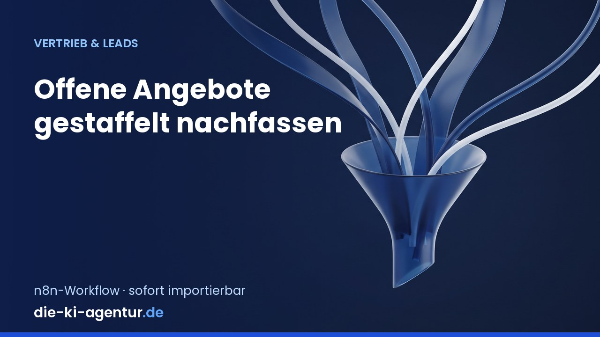
Vertrieb & Leads
Offene Angebote gestaffelt nachfassen
Prueft jeden Morgen die offenen Angebote in einer Google-Sheets-Liste, berechnet ihr Alter und faellt daraus die Nachfassentscheidung: nach 3 Tagen eine freundliche Erinnerung, nach 10 Tagen eine zweite Nachfrage, nach 21 …
-
Vertrieb & Leads
Leads mit Firmendaten anreichern und bewerten
Nimmt einen neuen Lead per Webhook entgegen, leitet aus der E-Mail-Adresse die Firmendomain ab und trennt Geschaeftsadressen von Freemail-Adressen (gmail.com, gmx.de, web.de und Co. werden als Privatperson markiert). Fuer …
-
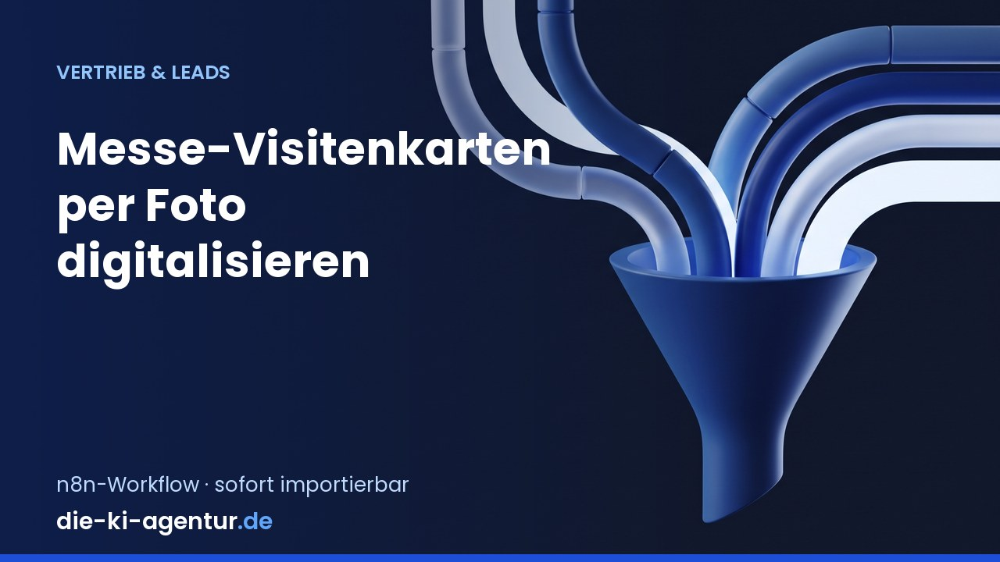
Vertrieb & Leads
Messe-Visitenkarten per Foto digitalisieren
Der Aussendienst fotografiert eine Visitenkarte und laedt sie ueber ein n8n-Formular hoch; die KI liest Name, Firma, Position, E-Mail und Telefon aus dem Bild, eine Plausibilitaetspruefung kontrolliert Mailformat und …
-
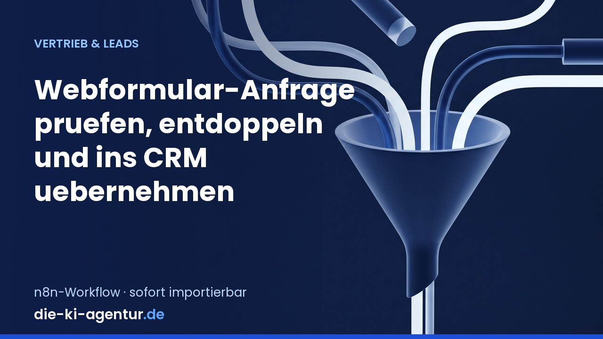
Vertrieb & Leads
Webformular-Anfragen prüfen und ins CRM übernehmen
Nimmt Anfragen aus dem Kontakt- oder Angebotsformular der Website per Webhook entgegen, prueft die Pflichtfelder, gleicht die E-Mail-Adresse gegen bestehende CRM-Kontakte ab und legt entweder einen neuen Lead an oder haengt …
-
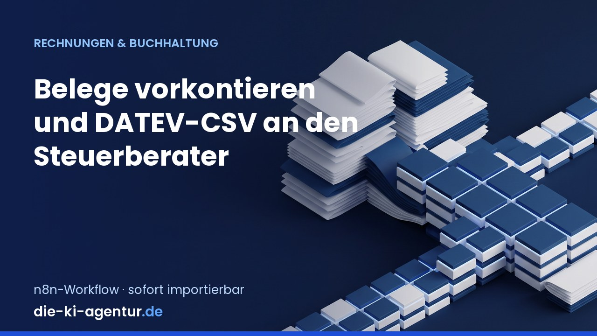
Rechnungen & Buchhaltung
Belege vorkontieren und DATEV-CSV erzeugen
Holt neue Belege aus einem Google-Drive-Ordner, extrahiert den PDF-Text und laesst die KI ein SKR03-Konto, eine Kostenstelle und einen Buchungstext samt Konfidenzwert vorschlagen. Nur Vorschlaege mit einer Konfidenz ueber 0,8 …
-
Rechnungen & Buchhaltung
Eingangsrechnungen aus E-Mail auslesen
Holt PDF-Rechnungen aus einem IMAP-Postfach, liest Rechnungsnummer, Datum, Betrag, USt und Lieferant per KI aus, legt sie strukturiert in Google Sheets ab und meldet Unstimmigkeiten. DSGVO-Hinweis: Bei personenbezogenen Daten …
-
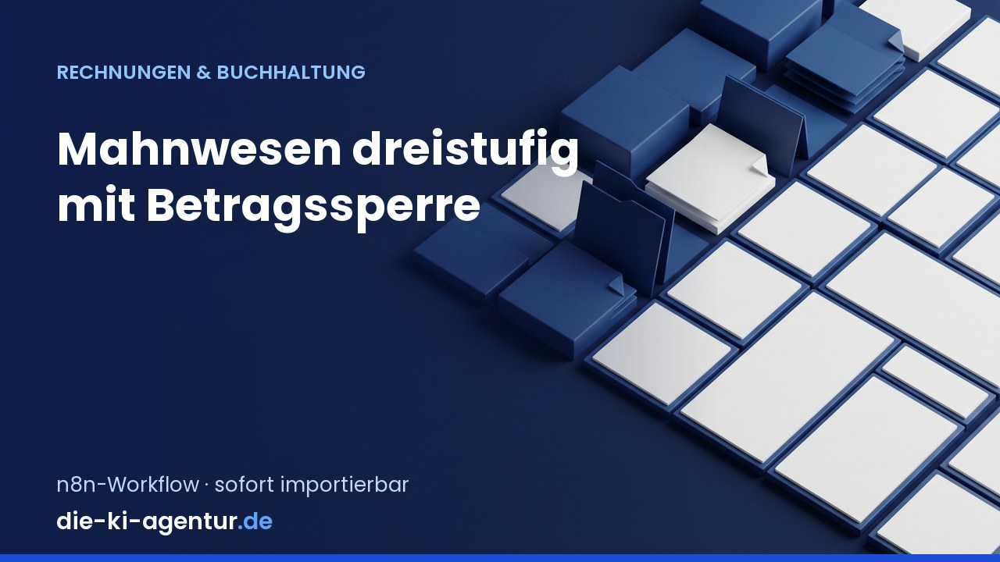
Rechnungen & Buchhaltung
Mahnwesen dreistufig mit Betragssperre
Prueft taeglich die offenen Posten aus Google Sheets, berechnet die Ueberfaelligkeit und faehrt eine dreistufige Staffel: ab 7 Tagen freundliche Zahlungserinnerung, ab 21 Tagen erste Mahnung mit Verzugshinweis, ab 40 Tagen …
-
E-Mail & Kommunikation
Newsletter-Entwurf aus Blogartikeln erzeugen
Liest einmal woechentlich den RSS-Feed der eigenen Website, filtert die seit dem letzten Lauf neu erschienenen Artikel heraus und laesst die KI daraus eine Newsletter-Zusammenfassung mit zwei Betreffzeilen-Varianten fuer einen …
-
E-Mail & Kommunikation
Posteingang sortieren, Entwürfe vorbereiten
Liest neue Mails per IMAP, faengt Bounces und Abwesenheitsnotizen in einem eigenen Zweig ab und laesst die KI jede echte Mail in Anfrage, Bestellung, Reklamation, Rechnung, Newsletter oder Spam einsortieren - inklusive …
-
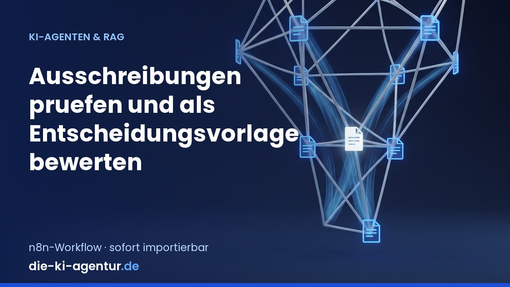
KI-Agenten & Firmenwissen
Ausschreibungen prüfen und bewerten
Ueber ein Formular wird eine Ausschreibung als PDF hochgeladen. Der Workflow liest den Text, zerlegt die Unterlagen per KI in Anforderungen, Fristen und Ausschlusskriterien und gleicht jeden Punkt gegen das eigene …
-
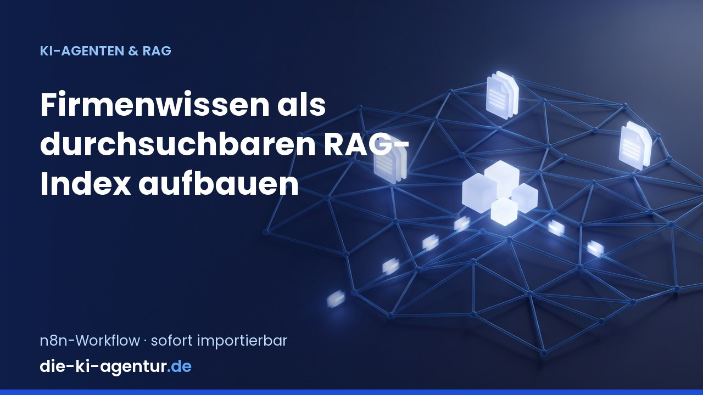
KI-Agenten & Firmenwissen
Firmenwissen als RAG-Index aufbauen
Baut naechtlich aus einer Dokumentenliste (Google Sheets) einen durchsuchbaren Wissensindex: Datei laden, Text extrahieren, in ueberlappende Abschnitte teilen, Embeddings erzeugen und in einen Vector Store (Qdrant, alternativ …
-
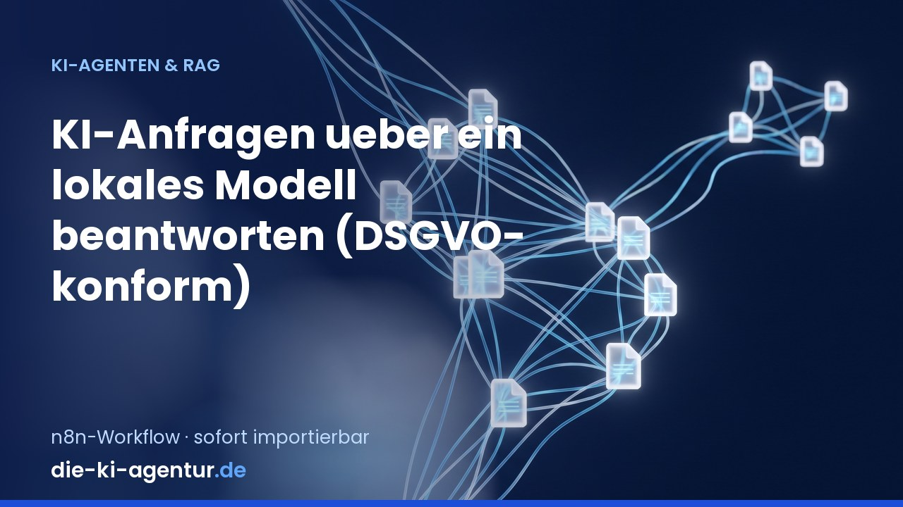
KI-Agenten & Firmenwissen
KI-Anfragen über ein lokales Modell beantworten
Nimmt Anfragen per Webhook entgegen und beantwortet sie mit einem lokal gehosteten Modell (Ollama auf demselben Server), sodass keine Inhalte an einen Cloud-Anbieter gehen; protokolliert werden nur Metadaten, keine Texte. …
-
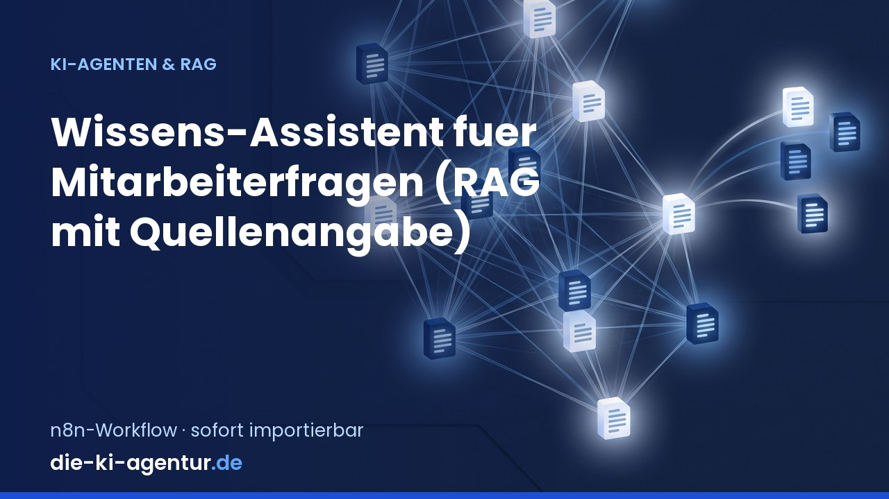
KI-Agenten & Firmenwissen
Wissens-Assistent mit Quellenangabe
Nimmt Mitarbeiterfragen per Webhook entgegen und beantwortet sie mit einem KI-Agenten, der ausschliesslich im eigenen Firmenwissen-Index (Vector Store) sucht und jede Aussage mit dem Dokumentnamen belegt. Findet die Suche …
-
Marketing & Content
SEO-Content-Briefing aus SERP-Analyse
Die Redaktion traegt ein Keyword in ein Formular ein, der Workflow holt die aktuellen Suchergebnisse ueber eine SERP-API (Platzhalter fuer DataForSEO oder SerpAPI), wertet die Top-Treffer aus und laesst die KI daraus ein …
-
Marketing & Content
Social-Media-Beiträge aus Blogartikeln
Liest taeglich den Blog-RSS-Feed, erkennt neue Artikel und laesst die KI daraus plattformspezifische Beitraege texten: LinkedIn sachlich-fachlich, Instagram kuerzer und direkter, jeweils mit Hashtag-Vorschlaegen und einem …
-
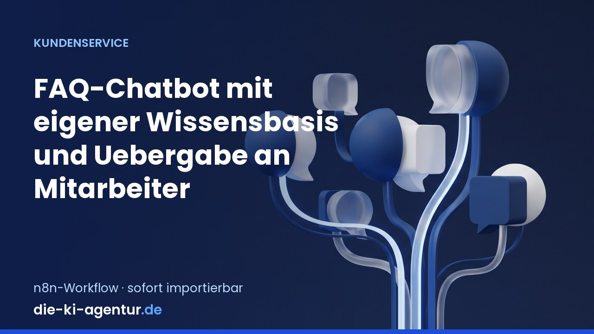
Kundenservice
FAQ-Chatbot mit eigener Wissensbasis
Nimmt Chat-Anfragen per Webhook entgegen, sucht die passenden Stellen in der eigenen Wissensbasis (Vector Store oder Retrieval-API, als Platzhalter hinterlegt) und laesst einen KI-Agenten ausschliesslich aus diesen Treffern …
-
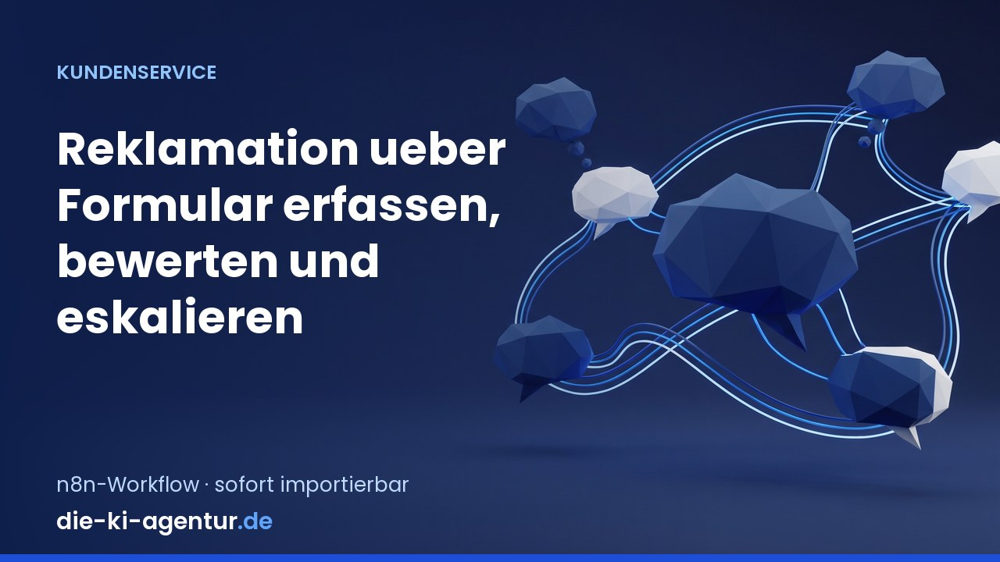
Kundenservice
Reklamationen erfassen und eskalieren
Nimmt Reklamationen ueber ein n8n-Formular auf (Bestellnummer, Problembeschreibung, Foto-Upload), prueft die Angaben auf Plausibilitaet und Gewaehrleistungsfrist und laesst die KI Schweregrad und Sachgebiet bestimmen. Daraus …
-
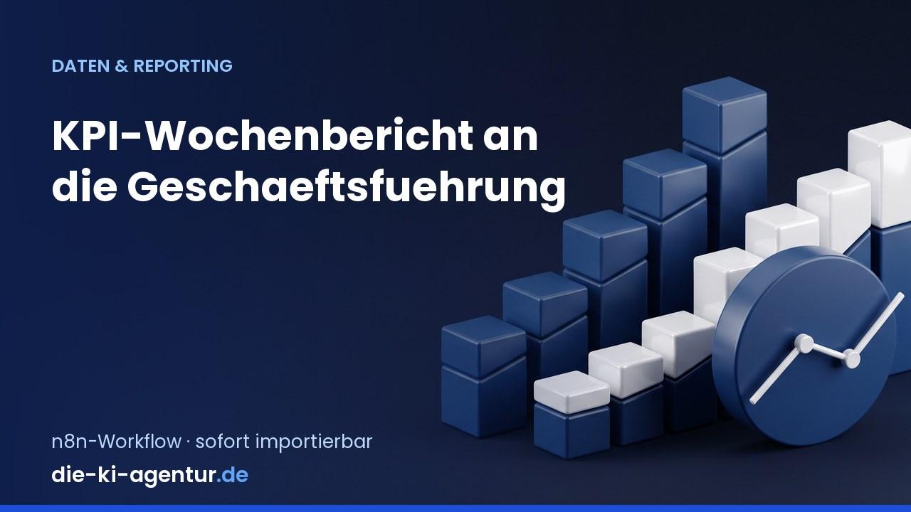
Daten & Reporting
KPI-Wochenbericht für die Geschäftsführung
Sammelt montags um 7 Uhr die Zahlen der Vorwoche aus zwei Quellen - Umsaetze aus Google Sheets und offene Angebote aus der Warenwirtschaft per HTTP-API - und berechnet Umsatz, Auftragseingang, Angebots-Conversion und die …
-
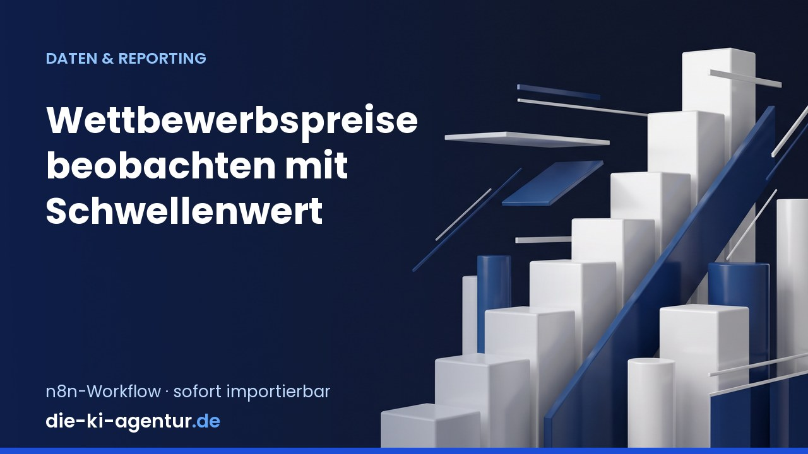
Daten & Reporting
Wettbewerbspreise mit Schwellenwert beobachten
Ruft taeglich die in einem Google Sheet gepflegten Wettbewerber-URLs ab, liest den Preis zuerst ueber einen hinterlegten CSS-Selektor und faellt nur bei Misserfolg auf die KI zurueck, vergleicht ihn mit dem eigenen Preis und …
-
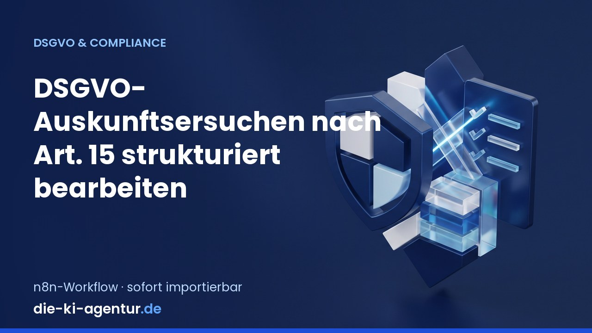
DSGVO & EU AI Act
DSGVO-Auskunftsersuchen strukturiert bearbeiten
Nimmt Auskunftsersuchen nach Art. 15 DSGVO ueber ein Formular entgegen, legt einen Vorgang im Fristenregister an und berechnet die Fristen. Entscheidender Punkt: Es werden keine Daten automatisch herausgegeben. Der Workflow …
-
DSGVO & EU AI Act
KI-Inventar nach EU AI Act pflegen
Abteilungen melden ueber ein Formular, welche KI-Systeme sie einsetzen — System, Zweck, Datenarten, Anbieter, Rechtsgrundlage. Eine KI schlaegt daraufhin die Risikoklasse nach EU AI Act vor (verbotene Praktik, Hochrisiko nach …
-
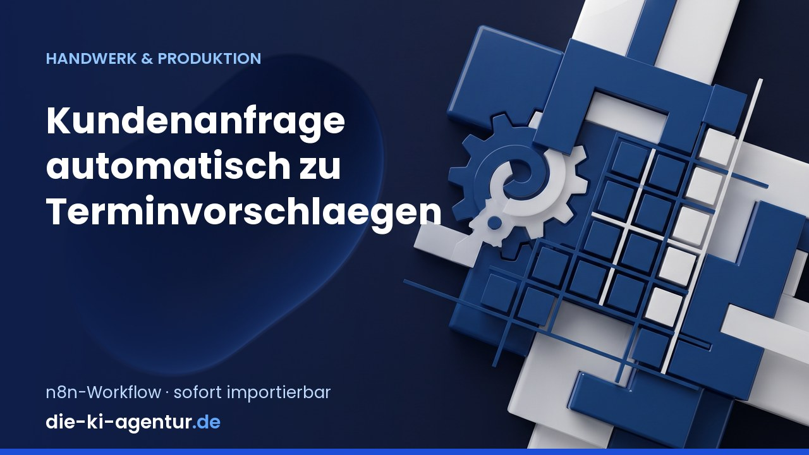
Handwerk & Produktion
Kundenanfragen zu Terminvorschlägen
Nimmt Kundenanfragen ueber ein Web-Formular an, laesst die KI Gewerk, Taetigkeit, Ort und Dringlichkeit herauslesen, gleicht die Termine gegen den Betriebskalender ab und schickt dem Kunden zwei bis drei konkrete …
-
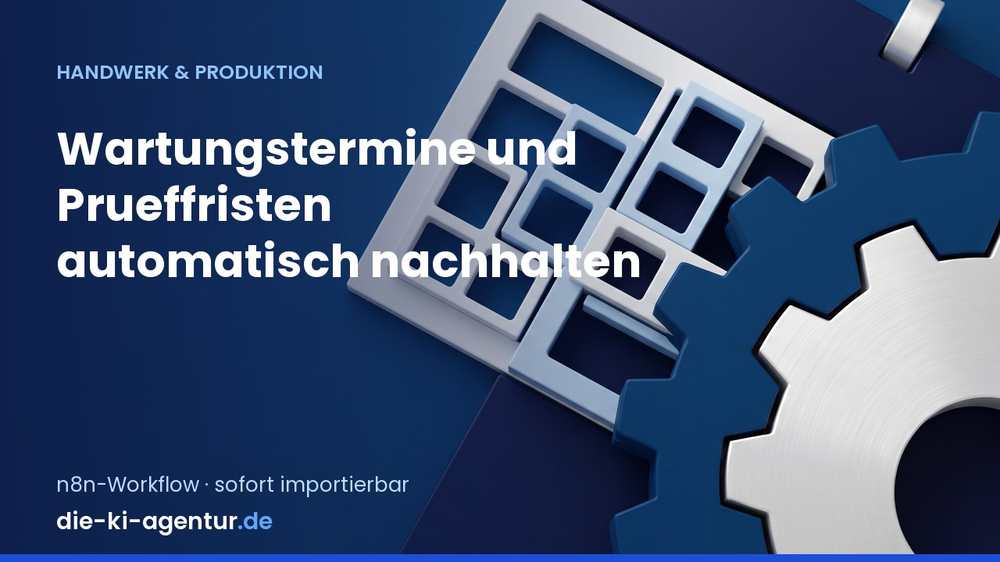
Handwerk & Produktion
Wartungstermine und Prüffristen nachhalten
Prueft einmal im Monat die Anlagenliste eines Handwerks- oder Produktionsbetriebs, rechnet aus Wartungsintervall und gesetzlicher Prueffrist aus, welche Anlagen faellig oder ueberfaellig sind, und schickt den Kunden ein …
-
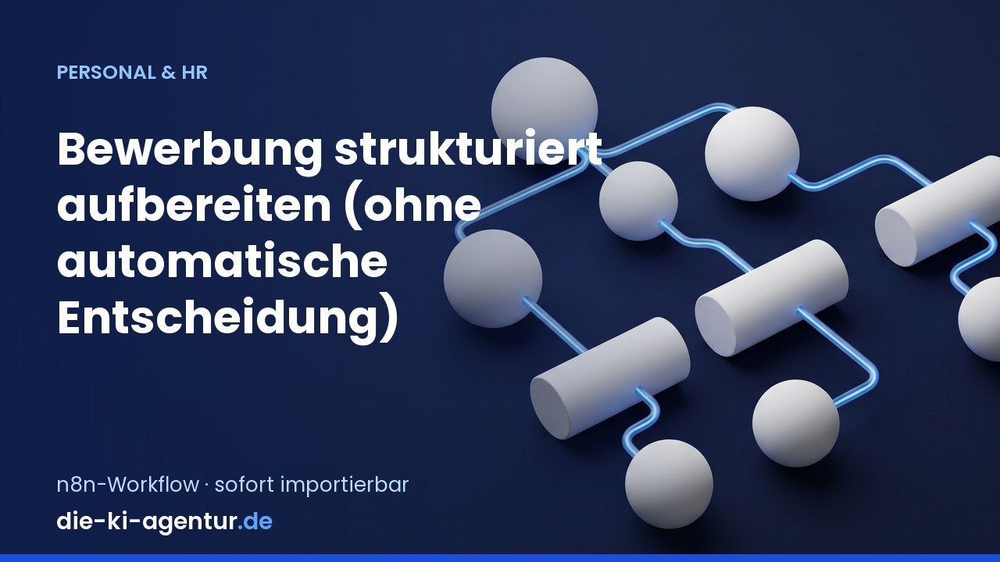
Personal & HR
Bewerbungen strukturiert aufbereiten
Nimmt Bewerbungen ueber ein Formular mit Lebenslauf-Upload entgegen, extrahiert den Text und laesst die KI die Qualifikationen strukturiert zusammenfassen und den hinterlegten Stellenanforderungen gegenueberstellen. Der …
-
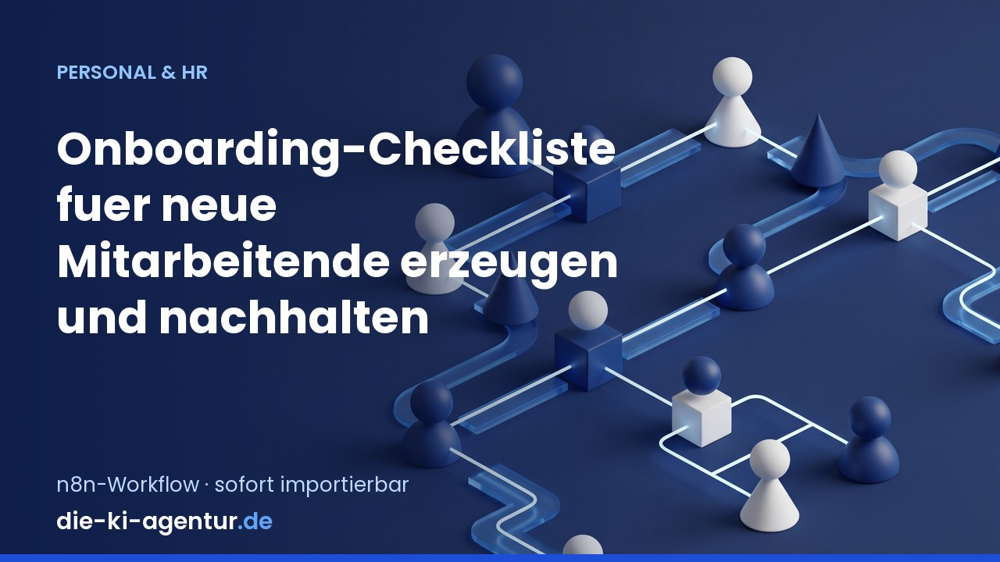
Personal & HR
Onboarding-Checkliste automatisch erzeugen
Wird vom Personalsystem per Webhook angestossen, sobald eine Einstellung feststeht: Der Workflow erzeugt aus Abteilung, Rolle und Eintrittsdatum eine vollstaendige Onboarding-Checkliste (IT-Zugaenge, Arbeitsplatz und Hardware, …
Kein Workflow passt zu dieser Suche.